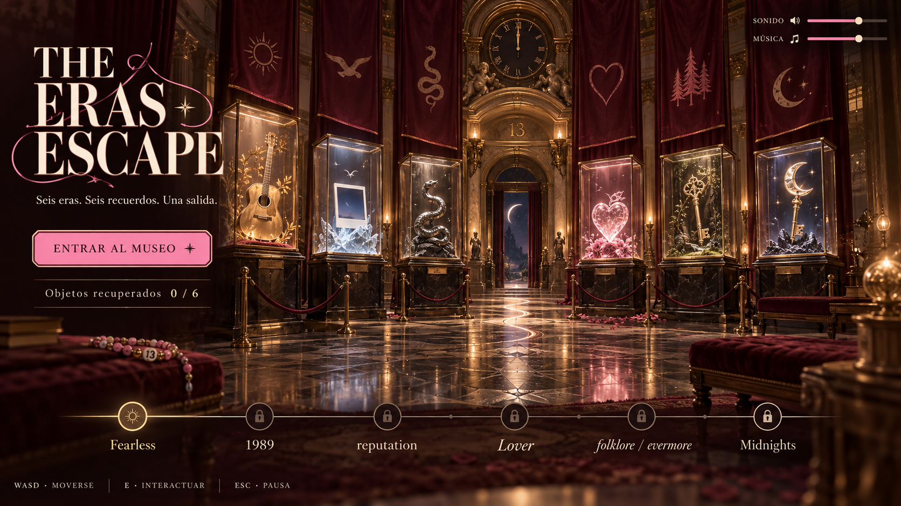
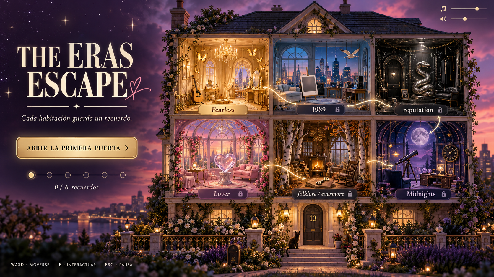
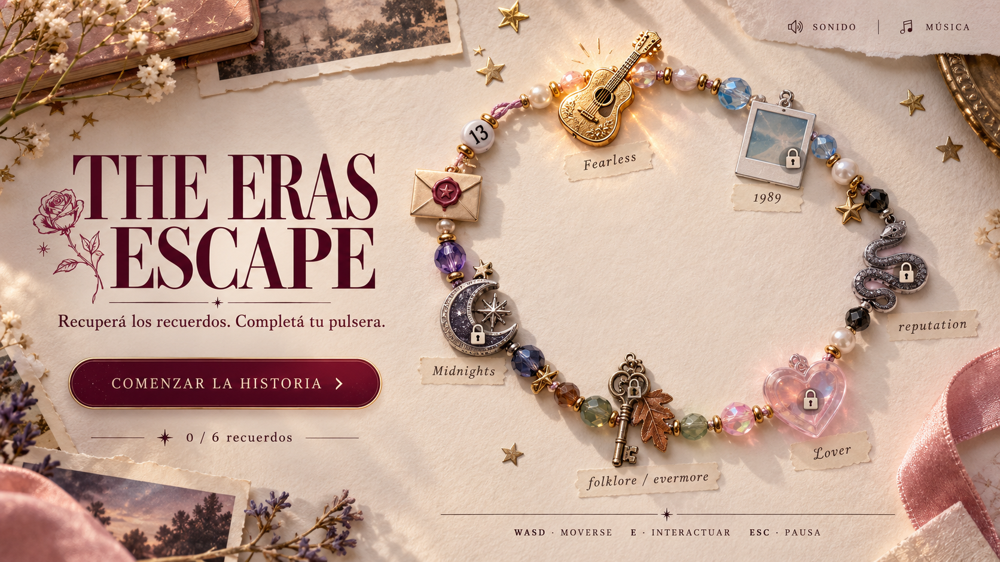
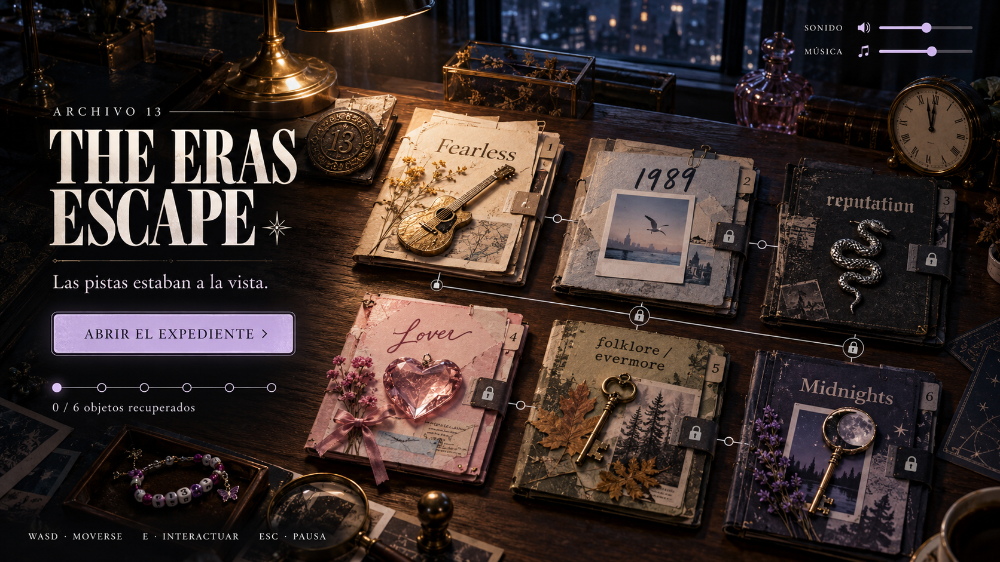

Vitrinas, terciopelo borgoña y recuerdos iluminados. La evolución más cercana al museo que ya existe en el juego.
Cuatro propuestas para el menú de inicio y pausa. Cada una conecta los seis niveles con sus objetos y con guiños swifties. Abrí una imagen para verla completa.

Vitrinas, terciopelo borgoña y recuerdos iluminados. La evolución más cercana al museo que ya existe en el juego.

Una habitación por capítulo. Interpretación propia inspirada en la casa de Lover, con un bosque compartido para folklore y evermore.

Los seis objetos se convierten en dijes. Una forma cálida de mostrar el progreso que se puede combinar con el museo.

Cada era se transforma en un expediente. Texturas de papel, objetos escondidos y luz de medianoche para poner el foco en resolver pistas.
Combinación recomendada: la atmósfera de Museo de las eras con la pulsera como indicador de los seis recuerdos.